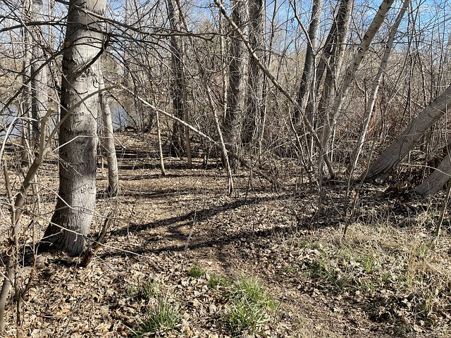
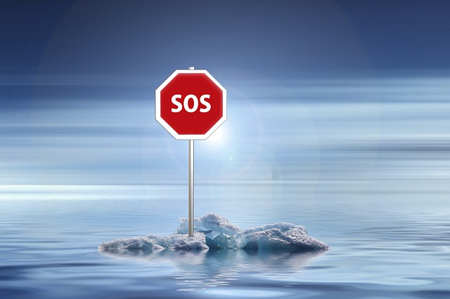

¿QUE ES LA DEFORESTACION?

La deforestación es un fenómeno de reducción de la superficie forestal. Está causada por múltiples factores, tanto naturales como humanos, y tiene consecuencias irreversibles en el medio ambiente.
Causas:
Incendios forestales
Enfermedades que afectan a los árboles
Parasitos
DERRETIMIENTO DE LOS GLACIARES

El derretimiento de los glaciares, fenómeno que se acentuó durante el siglo XX, nos está dejando un planeta sin hielo. La actividad humana es la mayor culpable con la emisión de dióxido de carbono y otros gases responsables del calentamiento
terrestre.
Causas:
Emisiones de CO2
Calentamiento oceánico